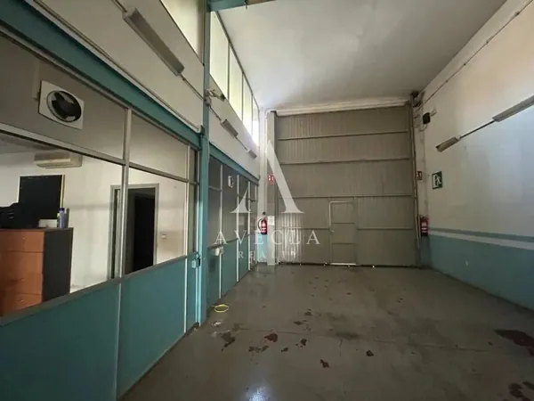
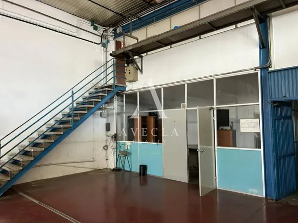
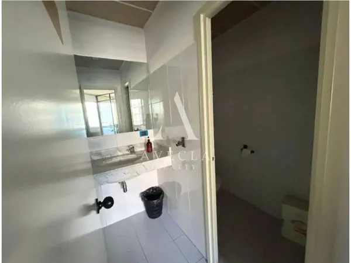

Plano · tocar un número de la lista lo marca acá
Letras: condiciones go/no-go · o: obra necesaria · números: lo que hay que medir o confirmar · c: lo que el chequeo de circulación marca hoy · trazos: el área o la franja de la cota · la línea azul: el largo libre a lo largo de la pista · ejes x/z: el origen de las cotas.
Condiciones go/no-go · si alguna sale mal, la nave se cae o hay que rehacer el layout
- Se decide en la visitaDecide: ≥ 4,8 m libres bajo jácenas, cerchas, luminarias e instalaciones en la vertical de la plataforma: plataforma a 2 m + 2,4 m del rider + 0,4 m de instalaciones (PROGRAMA §1). Si da menos, se baja la plataforma (a lo medido − 2,8 m), nunca el run-out.Altura libre medida con láser sobre la plataforma (m):
5 notas del layout
fuente de la cota: foto · foto 04 (portón ≈4,6 × 5,2 m medido con el postigo de 0,8 × 2,0 m; techo del pasillo a ≈5,4 m), foto 00 (techo en el frente del altillo a ≈5,6-5,9 m, escala puerta de 2,05 m) y foto 19 (techo ≈3,6 alturas de cámara ≈5,3-5,5 m). El anuncio dice 'Altura: 7 m' sin decir dónde (sería la cumbrera exterior); se toma el valor conservador. Valor de diseño (el mínimo de las estimaciones), no medido: el visor pone el alero a 5,65 m y la cumbrera a 5,9 m, y la cubierta queda a 5,78 m sobre el frente del altillo (foto 00: 5,6-5,9 m)
riesgo: Altura: si se confirmaran 7 m libres, la plataforma podría subir a ≈4 m. Con ≈5,3 m la altura daría para 2,5 m, pero el largo la deja en 2,0 m (ver el riesgo siguiente). Hay que medir bajo el techo plano y bajo las campanas, y averiguar si ese techo es un falso techo bajo una cubierta a dos aguas.
riesgo: No entran las 2 camas elásticas. Lado a lado piden al menos 7,6 × 5,2 m (marcos de 5,2 × 3,05 m con 1,5 m entre ellas) y unos 9,2 m de largo con las plataformas de 2 m en las cabeceras. El único hueco de planta baja con esa planta y altura es el fondo junto al testero (pad + lounge, 5,5 × 9,25 m): los marcos de 5,2 m quedarían a ≈0,15 m de las pilastras de la medianera y del pasillo de retorno, sin plataformas en las cabeceras, y se perdería el pad, que va antes en la prioridad (pista > pad > trampolines > gym). Bajo el altillo (≈2,95 m) y en la planta alta de oficinas (≈2,5 m) no hay altura para saltar.
supuesto: Bloque de oficinas de 9,5 × 7,5 m (x 5,1-14,6, z 24,8-32,3), con forjado a 2,9 m. Al lado, un pasillo de doble altura de 5,1 m hasta el portón (x 0-5,1). Las dos medidas son estimadas.
supuesto: match: planta alta del altillo de 2,3 m (techo a 5,6 m, bajo el alero de 5,65 m del visor). Las fotos 00 y 11 dan 2,3-2,9 m según la altura de cámara; con más, el altillo atravesaría la cubierta, que el visor pone a 5,65-5,78 m sobre él. La altura libre de 5,3 m es un valor de diseño, el mínimo de las estimaciones, no una medida.
- Se decide en la visitaDecide: ≥ 22,85 m en línea recta a lo largo de la pista (plataforma 1,8 m, rampa, llano y el final más largo, run-out ≥ 8 m), del frente del altillo detrás de la plataforma al muro después del final. Si da menos, se acorta la rampa o el llano y se baja la plataforma, nunca el run-out.Distancia del frente del altillo al muro, a lo largo de la pista (m):
4 notas del layout
riesgo: Altura: si se confirmaran 7 m libres, la plataforma podría subir a ≈4 m. Con ≈5,3 m la altura daría para 2,5 m, pero el largo la deja en 2,0 m (ver el riesgo siguiente). Hay que medir bajo el techo plano y bajo las campanas, y averiguar si ese techo es un falso techo bajo una cubierta a dos aguas.
riesgo: Largo de la nave (match de la foto 19): con el objetivo medido (≈1x) la cámara de las fotos 19, 02 y 12 está a ≈30-33 m del testero, y a ≥ 25 m aun con un gran angular de 66°, sobre suelo libre. Con el contorno de 32,3 m del Catastro y un bloque de oficinas de 7,5 m (frente en z 24,8) eso es imposible. Lo más coherente es una nave de ≈14,6 × 40-43 m con un bloque de ≈8-10 m (el pasillo del portón de la foto 04 mide ≈10 m), que es lo que da también el anuncio (630 m² de PB / 14,6 m ≈ 43 m), o una de las naves de 46-51 m de la hilera. El contorno no se da por cotejado hasta medir en la visita el largo libre (testero → frente de oficinas). Los 24,8 m de largo útil de la pista dependen de este contorno: si la nave es más larga, la pista puede crecer (plataforma más alta, más llano). match2: contando los módulos de la cristalera del altillo, su frente tiene 19-20 módulos y la cámara de la foto 19 está a ≈29,4 módulos del testero. Con el módulo de ≈1,05 m de la testa (foto 00) son un altillo de ≈20-21 m y una cámara a ≈31 m del testero con f ≈ 950 px (el 1x): la misma contradicción, ahora sin depender del objetivo. Las fotos piden un altillo de ≈20 m y una nave de ≈40 m; con 32,3 m no hay solución coherente. El módulo de 0,8 m que la hacía caber salía de forzar el contorno.
supuesto: match2: el altillo sigue en z 11,0-24,8 (13,8 m), sin cotejar. Contando los módulos iguales de su cristalera alta, su frente tiene 19-20 módulos (foto 00) y su testa está a ≈11,2 ± 1,2 módulos del testero (foto 19). Con el módulo de ≈1,05 m de la testa (foto 00), la testa cae a ≈11-13 m del testero, así que z 11,0 entra, pero el altillo mediría ≈20-21 m y llegaría a z ≈ 31-34, más allá del frente del bloque de oficinas del contorno de 32,3 m (ver riesgos). El módulo de 0,8 m de la pasada anterior salía de forzar ese contorno. Medir en la visita: la distancia del testero a la testa del altillo, el largo de su frente y el ancho de un módulo de la cristalera alta.
supuesto: medir en la visita: la escalera azul del altillo (en el layout, x 0-4,6 y z 9,8-11,0, pegada a la testa) y la ventana alta sobre su meseta (z ≈ 8,9-10,5); en la foto 00 la escalera sube contra la testa hacia la medianera. Su pie seguramente no sobresale hasta x 4,6: en la foto 00 (u ≈ 975-1045, v ≈ 640-653) cae a la derecha de la esquina de la testa (935, 646) y a su misma profundidad, es decir en x ≈ 3,4-3,9, detrás del plano del frente. Los ≈4,6 m de la escalera serían el largo del tramo inclinado: 19 peldaños a ≈44° dan ≈3,3-3,4 m en planta (atan(3,3/3,4) ≈ 44°). Si se confirma, la escalera cabe en x 0-3,9, libera el paso de 1,9 m a lo largo del frente del altillo y el retorno de 1,7 m puede pasar a 1,8 m.
- Se decide en la visitaDecide: Dos salidas o más a la calle o a un espacio exterior seguro, con recorridos de evacuación ≤ 50 m (CTE DB-SI 3 §3, tabla 3.1), y sus puertas con ≥ 0,80 m de paso y 2,10 m bajo el dintel. Cada salida nueva solo vale si el muro da a la calle o a un patio con salida y la propiedad deja abrirla (las obras, en «Obra necesaria»).
- puerta peatonal de 1 m en la arista 2 (hueco 0, x 6,1 · z 32,3)
- salida de emergencia de 1,2 m en la arista 0 (hueco 2, x 6,85 · z 0): nueva (hay que abrirla) · obra o1
Salidas confirmadas (cuáles, a dónde dan, ancho de paso):5 notas del layout
riesgo: Orientación e identificación: dos fotos, no una, ponen ventanas con luz directa en el muro x = 0, el que el Catastro da por medianera con una nave vecina de igual largo: la ventana sobre la meseta de la escalera del altillo (foto 00) y al menos 3 ventanas de la planta alta del altillo con manchas de sol que vienen del S (foto 11). Eso contradice la identificación como nave de esquina NO (patio al NO): o ese muro da a un patio o a una nave más baja, o la nave es otra de la hilera o está girada. Si fuera fachada, cambian el patio, las salidas y la vista de calle; el interior del layout no. En el visor esas ventanas dan contra la nave vecina.
riesgo: Largo justo: entre el testero y el bloque de oficinas hay 24,8 m. La pista ocupa 22,85 (rp-a, 24/11: el llano pasa a 9,89 m) y deja 1,95 m contra el testero (el paso del fondo, 1,80 m libres como pide PROGRAMA §1) para que las salidas del run-out lleven al retorno y a la salida de emergencia. Por eso la plataforma baja a 2,0 m y la rampa llega a ≈32° de máxima, el límite del programa. Si el bloque de oficinas resultara menos profundo que los 7,5 m estimados, cada metro ganado permitiría volver hacia los 2,4 m. El testero, a 1,2 m del final del run-out, necesita igual forro acolchado y red.
riesgo: Salida de emergencia del testero (hueco 2, propuesta), obra necesaria: abrir una puerta de emergencia de 1,20 × 2,10 m en el testero ciego (x 6,25-7,45, z = 0) al patio trasero, con su licencia, y confirmar en la visita que el patio es espacio exterior seguro. El replanteo de transitabilidad (rp-a, 24/11) cuenta con ella: sin ella solo cuenta la puerta peatonal de la calle (el portón no es salida), y walk da `exit count` (1 salida para 88 ocupantes de cálculo) y `evacuation max` (37,9 m desde el final del run-out, contra los 25 m de DB-SI 3 tabla 3.1 con una salida; PROGRAMA §3 pide 2). Si no se hace, la alternativa también es obra: otra salida al patio lateral, en el muro NO. Decisión del usuario (docs/TRANSITABILIDAD.md, «Replanteo de rp-a»). La puerta peatonal de oficinas es la entrada accesible y hay que comprobar el escalón del umbral.
riesgo: open-floors (25/11): la escalera azul a la planta alta de oficinas termina en una meseta cerrada (los tabiques `cierre-planta-alta*`, con la puerta marrón de la foto 03 adentro): un fondo de saco. La persona de 0,60 de walk no llega a su pie (a 0,2 m de la plataforma no entra de frente), pero el que camina del visor, de 0,50, sí sube: sin los tabiques llega a la planta alta desde la calle en 22 s, con 0,1 m de holgura (las barandillas dibujadas de las escaleras existentes no chocan). Con una valla de prueba de 1,10 m en el costado del pasillo de x 11,8-13,1 (x 13,0-13,1, z 24,8-25,8: las tres primeras huellas) también llega (22,2 s), así que no entra solo por ese costado. Una persona de verdad subiría según la barandilla real del arranque y lo que quede abierto bajo la plataforma (el sitio de la escalera es estimado, foto 03). El arreglo es cerrar el pie, no la llegada: una cancela o una valla de fit-out por donde se entre, que va con lo que se mida en la visita (el sitio de la escalera, su barandilla y el cierre del hueco bajo el rellano de la escalera de la plataforma, el riesgo «Bajo el rellano de llegada…» de esta lista). Mientras, el visor deja subir a una meseta sin salida.
supuesto: 2 líneas de 3,2 m que terminan las dos en un run-out de 8 m. Con 9 m de llano caben 2 módulos: en L1, junto al retorno, el cajón de iniciación; en L2, el rail de la demo. Se quita el quarter: era la única línea «avanzada» y le recortaba la salida al rail.
- Se decide en la visitaDecide: Huella ≥ 0,28 m, contrahuella de 0,13 a 0,185 m y 0,54 ≤ 2C + H ≤ 0,70 (CTE DB-SUA 1 §4.2.1); ancho ≥ 1,20 m (PROGRAMA; el CTE pide 1,00-1,10); tramos de ≤ 2,25 m sin descanso. Una escalera existente que no cumple no sirve para el público (gym o altillo): hay que rehacerla o poner otra.
- de la plataforma (escalera-plataforma): huella 0,28 m, contrahuella 0,17 m, ancho 1,28 m, tramo de 2 m sin descanso, sube 2 m
- existente (escalera-existente): huella 0,17 m, contrahuella 0,17 m, ancho 1,14 m, tramo de 3,3 m sin descanso, sube 3,3 m
- existente (escalera-existente-2): huella 0,26 m, contrahuella 0,17 m, ancho 1,17 m, tramo de 2,9 m sin descanso, sube 2,9 m · hoy no se llega a su arranque
Huella × contrahuella × ancho de la escalera existente (m):11 notas del layout
riesgo: Orientación e identificación: dos fotos, no una, ponen ventanas con luz directa en el muro x = 0, el que el Catastro da por medianera con una nave vecina de igual largo: la ventana sobre la meseta de la escalera del altillo (foto 00) y al menos 3 ventanas de la planta alta del altillo con manchas de sol que vienen del S (foto 11). Eso contradice la identificación como nave de esquina NO (patio al NO): o ese muro da a un patio o a una nave más baja, o la nave es otra de la hilera o está girada. Si fuera fachada, cambian el patio, las salidas y la vista de calle; el interior del layout no. En el visor esas ventanas dan contra la nave vecina.
riesgo: transitabilidad (rp-a, 24/11): sin gym ni galería. Iban en la planta alta de oficinas (+2,9), a la que solo sube la escalera azul existente (x 13,1-14,3, z 25-29,4), y su pie (z 25) queda detrás de la plataforma (z 23,0-24,8): walk no llegaba al gym, y la galería, un lounge, pide además un recorrido sin escalones (no hay ascensor). Para llegar al pie de esa escalera la pista tendría que acortarse ≈1,2-1,5 m más, y el llano bajaría de los 9 m mínimos de PROGRAMA. El lounge de planta baja (17,8 m²) es todo el lounge + café (PROGRAMA pide 30-50). Para recuperar la planta alta haría falta obra (un ascensor o una plataforma elevadora y otro arranque para la escalera): decisión del usuario.
riesgo: Las escaleras existentes son muy empinadas (la del altillo, ≈44°) y solo valen para personal. El almacén del altillo es para material ligero; los módulos van al taller, junto al portón.
riesgo: La profundidad del bloque de oficinas y la posición de su escalera son estimadas: el pasillo de la foto 04 parece medir ≈10 m. Si el bloque fuera más profundo, la pista no cabría tal como está y habría que recortar el llano.
riesgo: Bajo el rellano de llegada de la escalera de la plataforma (z 23,0-24,2) solo quedan 1,94 m libres, y está en el camino del pasillo de oficinas a la nave: hay que cerrar ese hueco (barandilla, banco o almacén bajo) para que nadie pase por debajo.
riesgo: open-floors (25/11): la escalera azul a la planta alta de oficinas termina en una meseta cerrada (los tabiques `cierre-planta-alta*`, con la puerta marrón de la foto 03 adentro): un fondo de saco. La persona de 0,60 de walk no llega a su pie (a 0,2 m de la plataforma no entra de frente), pero el que camina del visor, de 0,50, sí sube: sin los tabiques llega a la planta alta desde la calle en 22 s, con 0,1 m de holgura (las barandillas dibujadas de las escaleras existentes no chocan). Con una valla de prueba de 1,10 m en el costado del pasillo de x 11,8-13,1 (x 13,0-13,1, z 24,8-25,8: las tres primeras huellas) también llega (22,2 s), así que no entra solo por ese costado. Una persona de verdad subiría según la barandilla real del arranque y lo que quede abierto bajo la plataforma (el sitio de la escalera es estimado, foto 03). El arreglo es cerrar el pie, no la llegada: una cancela o una valla de fit-out por donde se entre, que va con lo que se mida en la visita (el sitio de la escalera, su barandilla y el cierre del hueco bajo el rellano de la escalera de la plataforma, el riesgo «Bajo el rellano de llegada…» de esta lista). Mientras, el visor deja subir a una meseta sin salida.
supuesto: Escalera recta de 1,2 × 4,6 m pegada a la rampa (x 6,5-7,7, z 19,6-24,2): un solo tramo de 12 contrahuellas de 0,167 m y huellas de 0,283 m, porque 2,0 m ≤ 2,25 m por tramo (CTE DB-SUA), y un rellano de llegada de 1,2 × 1,2 m junto a la plataforma. El retorno (1,7 m) va pegado a la red desde el paso del fondo hasta el pie de la escalera.
supuesto: Planta alta de oficinas (escalera existente): sin programa (transitabilidad, rp-a, 24/11: el gym y la galería que iban acá no tienen recorrido, ver abajo). En el altillo largo, almacén de material ligero. El taller y el almacén de módulos van en el pasillo, junto al portón, para descargar desde el patio. Desde open-floors (25/11), clausurada en la llegada de su escalera (tabiques `cierre-planta-alta*`, fit-out, que encierran la meseta de la puerta marrón de la foto 03): sin programa no le sirve a nadie, tampoco al personal, y walk mide la escalera con los mínimos de uso restringido. No es que no se pueda subir: la persona de 0,60 de walk no llega al pie de la escalera, a 0,2 m detrás de la plataforma, pero el que camina del visor sí sube (notes.risks, open-floors).
supuesto: plantilla Stoke Mountain adaptada: plataforma 2.0 m × 1.8 m; drop-in de 1.13 m en 3.2 m; 1 terraza(s) de 7.4 m que caen 3° unidas por drops de 0.44 m en 2.6 m; sin carril de transición (nave estrecha); 2 módulos a escala real por terraza (T1 cajones cortos, T2 cajón largo / rail / roller, down rail en el último drop), solo donde se llega con velocidad (µ 0,09); misma huella, mismos finales (run-out ≥ 8 m / quarter) y escalera; los módulos anteriores quedan en slope.legacyModules.
supuesto: medir en la visita: la escalera azul del altillo (en el layout, x 0-4,6 y z 9,8-11,0, pegada a la testa) y la ventana alta sobre su meseta (z ≈ 8,9-10,5); en la foto 00 la escalera sube contra la testa hacia la medianera. Su pie seguramente no sobresale hasta x 4,6: en la foto 00 (u ≈ 975-1045, v ≈ 640-653) cae a la derecha de la esquina de la testa (935, 646) y a su misma profundidad, es decir en x ≈ 3,4-3,9, detrás del plano del frente. Los ≈4,6 m de la escalera serían el largo del tramo inclinado: 19 peldaños a ≈44° dan ≈3,3-3,4 m en planta (atan(3,3/3,4) ≈ 44°). Si se confirma, la escalera cabe en x 0-3,9, libera el paso de 1,9 m a lo largo del frente del altillo y el retorno de 1,7 m puede pasar a 1,8 m.
supuesto: transitabilidad (rp-a, 24/11): escalera de la plataforma de 1,5 m (x 6,2-7,7): con 1,2 m pegada a la red walk daba 1,00 m útiles (la franja de la pista se come el lado de la red), con 1,5 da 1,28. La máquina expendedora pasa del rincón detrás de las mesas del lounge (0,77 m de paso) al vestíbulo de las taquillas (x 3,9-4,65, z 21,4-22,2, de cara al paso de 2,3 m entre el altillo y la escalera de la plataforma: 1,55 m junto a la máquina). El extintor del final del run-out sube por el muro NO a z 2,05, fuera del paso del fondo. La BIE de la nave, que quedaba a 0,20 m de la máquina (que asoma 0,50 m más que el armario, del lado desde el que se abre), pasa al frente del vestuario F (z 16,7-17,4), con 1 m libre a cada lado y el paso delante: RIPCI (RD 513/2017, anexo I) pide una zona libre de obstáculos alrededor de cada BIE para llegar a ella y maniobrarla. Su hoja abre hacia −z (las bisagras de ese lado), así que el extintor de los vestuarios se corre a z 15,1-15,7, fuera de su barrido. Así queda además a ≈22,5 m de recorrido del final del run-out, rodeando la pista (antes ≈26, más que los 25 m de radio de acción: 20 m de manguera y 5 de chorro).
- Se decide en la visitaDecide: Ningún pilar dentro de la pista; los de la franja de 0,2 m del murete y la red, forrados (el murete se corta en cada uno); el pasillo de retorno, ≥ 1,80 m libres con los pilares.Posición y sección de los pilares junto a la pista (m):
1 nota del layout
riesgo: No entran las 2 camas elásticas. Lado a lado piden al menos 7,6 × 5,2 m (marcos de 5,2 × 3,05 m con 1,5 m entre ellas) y unos 9,2 m de largo con las plataformas de 2 m en las cabeceras. El único hueco de planta baja con esa planta y altura es el fondo junto al testero (pad + lounge, 5,5 × 9,25 m): los marcos de 5,2 m quedarían a ≈0,15 m de las pilastras de la medianera y del pasillo de retorno, sin plataformas en las cabeceras, y se perdería el pad, que va antes en la prioridad (pista > pad > trampolines > gym). Bajo el altillo (≈2,95 m) y en la planta alta de oficinas (≈2,5 m) no hay altura para saltar.
- Se decide en la visitaDecide: Confirmar con la agencia o la propiedad la dirección, la referencia catastral y qué nave es (las fotos y las superficies tienen que ser de esta).Referencia catastral y número confirmados:
2 notas del layout
riesgo: Identificación de la nave: hay que confirmar la referencia catastral con AVECLA. Si fuera la unidad 0003 por orden de portales (11,5 × 48 m, entre medianeras), cambian por completo el contorno, el patio y la orientación de este layout.
riesgo: Orientación e identificación: dos fotos, no una, ponen ventanas con luz directa en el muro x = 0, el que el Catastro da por medianera con una nave vecina de igual largo: la ventana sobre la meseta de la escalera del altillo (foto 00) y al menos 3 ventanas de la planta alta del altillo con manchas de sol que vienen del S (foto 11). Eso contradice la identificación como nave de esquina NO (patio al NO): o ese muro da a un patio o a una nave más baja, o la nave es otra de la hilera o está girada. Si fuera fachada, cambian el patio, las salidas y la vista de calle; el interior del layout no. En el visor esas ventanas dan contra la nave vecina.
Obra necesaria · lo que la nave no tiene hoy y la propuesta necesita: decisiones del usuario, a ver en la visita si se puede
- hueco nuevoObra: Obra necesaria: salida de emergencia nueva de 1,20 × 2,10 m en el testero ciego (x 6,25-7,45; las fotos 01/02/19 no muestran ninguna puerta en el testero), al patio trasero de la parcela (Catastro: patio perimetral; confirmar en la visita que es espacio exterior seguro), al final del pasillo de retorno y del paso del fondo.En la visita: Que el paño de muro dé a la calle o a un espacio exterior seguro (si da a una nave vecina, solo vale como salida de planta, con un vestíbulo de independencia o un pasillo protegido: CTE DB-SI Anejo A), que en el hueco no haya pilares, bajantes ni instalaciones, y que la propiedad deje abrirlo.
- Es una de las 2 salidas que cuenta el chequeo de circulación: sin ella quedaría una sola.
De dónde sale (2)
fuente: propuesta (transitable, 24/11). Obra necesaria: salida de emergencia nueva de 1,20 × 2,10 m en el testero ciego (x 6,25-7,45; las fotos 01/02/19 no muestran ninguna puerta en el testero), al patio trasero de la parcela (Catastro: patio perimetral; confirmar en la visita que es espacio exterior seguro), al final del pasillo de retorno y del paso del fondo. Sin ella solo cuenta la puerta peatonal de la calle (el portón no es salida, PROGRAMA §5): 1 salida para 88 ocupantes de cálculo y 37,9 m desde el final del run-out, contra los 25 m de DB-SI 3 tabla 3.1 con una salida (PROGRAMA §3 pide 2). Decisión del usuario: notes.risks y docs/TRANSITABILIDAD.md («Replanteo de rp-a»)
riesgo 10: Salida de emergencia del testero (hueco 2, propuesta), obra necesaria: abrir una puerta de emergencia de 1,20 × 2,10 m en el testero ciego (x 6,25-7,45, z = 0) al patio trasero, con su licencia, y confirmar en la visita que el patio es espacio exterior seguro. El replanteo de transitabilidad (rp-a, 24/11) cuenta con ella: sin ella solo cuenta la puerta peatonal de la calle (el portón no es salida), y walk da `exit count` (1 salida para 88 ocupantes de cálculo) y `evacuation max` (37,9 m desde el final del run-out, contra los 25 m de DB-SI 3 tabla 3.1 con una salida; PROGRAMA §3 pide 2). Si no se hace, la alternativa también es obra: otra salida al patio lateral, en el muro NO. Decisión del usuario (docs/TRANSITABILIDAD.md, «Replanteo de rp-a»). La puerta peatonal de oficinas es la entrada accesible y hay que comprobar el escalón del umbral.
Visto:
Medir y confirmar en la visita · 11, de las notas del layout
-
Detalle
match2: el altillo sigue en z 11,0-24,8 (13,8 m), sin cotejar. Contando los módulos iguales de su cristalera alta, su frente tiene 19-20 módulos (foto 00) y su testa está a ≈11,2 ± 1,2 módulos del testero (foto 19). Con el módulo de ≈1,05 m de la testa (foto 00), la testa cae a ≈11-13 m del testero, así que z 11,0 entra, pero el altillo mediría ≈20-21 m y llegaría a z ≈ 31-34, más allá del frente del bloque de oficinas del contorno de 32,3 m (ver riesgos). El módulo de 0,8 m de la pasada anterior salía de forzar ese contorno. Medir en la visita:
Medido: -
Detalle
medir en la visita:
Su pie seguramente no sobresale hasta x 4,6: en la foto 00 (u ≈ 975-1045, v ≈ 640-653) cae a la derecha de la esquina de la testa (935, 646) y a su misma profundidad, es decir en x ≈ 3,4-3,9, detrás del plano del frente. Los ≈4,6 m de la escalera serían el largo del tramo inclinado: 19 peldaños a ≈44° dan ≈3,3-3,4 m en planta (atan(3,3/3,4) ≈ 44°). Si se confirma, la escalera cabe en x 0-3,9, libera el paso de 1,9 m a lo largo del frente del altillo y el retorno de 1,7 m puede pasar a 1,8 m.
Medido: -
Detalle
medir en la visita:
En la foto 00 su frente llega al frente del bloque de oficinas, pero no se ve si se para en z 24,8 o sigue sobre el pasillo del portón.
Medido: -
Detalle
Contradicción de identificación: el Catastro asigna «C/ Marconi 23» a la unidad 0003 (558 m²). Por el orden de portales (el 31 está en el extremo NO) sería la 5.ª nave desde el NO, de 11,5 × 48 m. Las fotos piden una nave de ≈15 m de ancho (ver la verificación del ancho), y eso solo lo cumplen las dos del extremo NO.
Medido: -
Detalle
Contradicción: sobre esa meseta hay una ventana alta muy luminosa (foto 00). Sus cantos fugan al mismo punto que el frente del altillo, así que está en un muro paralelo al eje, el del propio altillo. Según el Catastro, ese muro es la medianera SE con la nave vecina, de igual largo. Se dibuja porque está en la foto.
El interior de este layout no cambiaría; cambiarían la calle y las salidas.
Medido: -
Detalle
match2: largo del altillo (revisado). Foto 00: 19-20 módulos de la testa al final del frente (u ≈ 395-455, donde empieza el frente del bloque de oficinas). Foto 19: la cámara está a 18,2 módulos de la testa (1/(154 × 0,000357)) y la testa a 0,60-0,64 de la distancia cámara-testero (en el suelo, (521 − 476)/(549 − 476)): el testero queda a ≈29,4 módulos de la cámara y la testa a ≈11,2 ± 1,2 módulos del testero. Para pasarlo a metros hace falta el módulo, y la superposición de la foto 19 no lo da: en una vista casi frontal da lo mismo cualquier par de módulo y objetivo con m/f ≈ 0,0011. Con el de la testa en la foto 00 (≈1,05 m), la testa queda a ≈11-13 m del testero, el altillo mide ≈20-21 m (hasta z ≈ 31-34) y la cámara de la foto 19 está a ≈31 m del testero, con f ≈ 950 px. El 0,8 m de la pasada anterior salía de suponer 31,2 módulos = 24,8 m (el contorno del Catastro menos el bloque de oficinas): era el dato de entrada, no una medida.
Medido: -
Detalle
Si fuera la unidad 0003 por orden de portales (11,5 × 48 m, entre medianeras), cambian por completo el contorno, el patio y la orientación de este layout.
Medido: -
Detalle
Altura: si se confirmaran 7 m libres, la plataforma podría subir a ≈4 m. Con ≈5,3 m la altura daría para 2,5 m, pero el largo la deja en 2,0 m (ver el riesgo siguiente).
Medido: -
Detalle
que el patio es espacio exterior seguro. El replanteo de transitabilidad (rp-a, 24/11) cuenta con ella: sin ella solo cuenta la puerta peatonal de la calle (el portón no es salida), y walk da `exit count` (1 salida para 88 ocupantes de cálculo) y `evacuation max` (37,9 m desde el final del run-out, contra los 25 m de DB-SI 3 tabla 3.1 con una salida; PROGRAMA §3 pide 2). Si no se hace, la alternativa también es obra: otra salida al patio lateral, en el muro NO. Decisión del usuario (docs/TRANSITABILIDAD.md, «Replanteo de rp-a»). La puerta peatonal de oficinas es la entrada accesible y hay que comprobar el escalón del umbral.
Medido: -
Detalle
Largo de la nave (match de la foto 19): con el objetivo medido (≈1x) la cámara de las fotos 19, 02 y 12 está a ≈30-33 m del testero, y a ≥ 25 m aun con un gran angular de 66°, sobre suelo libre. Con el contorno de 32,3 m del Catastro y un bloque de oficinas de 7,5 m (frente en z 24,8) eso es imposible. Lo más coherente es una nave de ≈14,6 × 40-43 m con un bloque de ≈8-10 m (el pasillo del portón de la foto 04 mide ≈10 m), que es lo que da también el anuncio (630 m² de PB / 14,6 m ≈ 43 m), o una de las naves de 46-51 m de la hilera. El contorno no se da por cotejado hasta medir en la visita
Los 24,8 m de largo útil de la pista dependen de este contorno: si la nave es más larga, la pista puede crecer (plataforma más alta, más llano). match2: contando los módulos de la cristalera del altillo, su frente tiene 19-20 módulos y la cámara de la foto 19 está a ≈29,4 módulos del testero. Con el módulo de ≈1,05 m de la testa (foto 00) son un altillo de ≈20-21 m y una cámara a ≈31 m del testero con f ≈ 950 px (el 1x): la misma contradicción, ahora sin depender del objetivo. Las fotos piden un altillo de ≈20 m y una nave de ≈40 m; con 32,3 m no hay solución coherente. El módulo de 0,8 m que la hacía caber salía de forzar el contorno.
Medido: -
Detalle
open-floors (25/11): la escalera azul a la planta alta de oficinas termina en una meseta cerrada (los tabiques `cierre-planta-alta*`, con la puerta marrón de la foto 03 adentro): un fondo de saco. La persona de 0,60 de walk no llega a su pie (a 0,2 m de la plataforma no entra de frente), pero el que camina del visor, de 0,50, sí sube: sin los tabiques llega a la planta alta desde la calle en 22 s, con 0,1 m de holgura (las barandillas dibujadas de las escaleras existentes no chocan). Con una valla de prueba de 1,10 m en el costado del pasillo de x 11,8-13,1 (x 13,0-13,1, z 24,8-25,8: las tres primeras huellas) también llega (22,2 s), así que no entra solo por ese costado. Una persona de verdad subiría según la barandilla real del arranque y lo que quede abierto bajo la plataforma (el sitio de la escalera es estimado, foto 03).
la escalera de la plataforma, el riesgo «Bajo el rellano de llegada…» de esta lista). Mientras, el visor deja subir a una meseta sin salida.
Medido:
Circulación · lo que el chequeo marca hoy (CTE DB-SI 3, DB-SUA): ver en la visita si el paso real es así
- avisoescalera existente escalera-existente: contrahuellas de 0,174 a 0,174 m y huellas de 0,174 a 0,174 m (uso restringido: C ≤ 0,200, H ≥ 0,220)CTE DB-SUA 1 §4.1, §4.2.1 y §4.2.2 · peldaños de la escalera azul al altillo (contrahuella y huella de 0,174 m: ≈19 peldaños, foto 00), de uso restringido porque solo lleva al almacén del altillo: existente, se conserva (PROGRAMA §4) y queda como aviso (barbera-marconi)
Fotos que conviene sacar
- Fachada y acera desde enfrente, con la calle a los dos lados (la llegada a pie y en coche, y dónde se aparca).
- Cada puerta (3: puerta peatonal, portón seccional, salida de emergencia) desde dentro y desde fuera, con el metro abierto en el paso libre y en la altura.
- La pared del arranque de la pista (detrás de la plataforma) de suelo a cubierta, con la jácena o la cercha de encima y el láser apuntando a su cara de abajo.
- El final de la pista: lo que hay después del run-out (muro, frente del altillo, salida) y el suelo de esa franja.
- Las dos medianeras de punta a punta, para contar pórticos y pilastras y ver si sobresalen.
- La cubierta y los lucernarios desde el centro de la nave, mirando a cada testero (para la luz del 3D y el estado de las placas).
- El suelo: estado, juntas, desniveles, sumideros y arquetas.
- El cuadro eléctrico, la acometida de agua y los desagües (vestuarios y aseos nuevos).
- El frente del altillo de punta a punta, y debajo: la altura libre, sus pilares y sus puertas.
- La escalera existente de lado, con el metro en una huella y una contrahuella, y su llegada arriba.
- A. Altura libre sobre la plataforma: una foto con la medida a la vista.
- B. Largo libre para la pista: una foto con la medida a la vista.
- C. Salidas y evacuación: una foto con la medida a la vista.
- D. Escaleras: peldaños, ancho y tramos: una foto con la medida a la vista.
- E. Pilares en la pista, su franja o el retorno: una foto con la medida a la vista.
- F. Que sea la nave del anuncio: una foto con la medida a la vista.
- o1. Obra necesaria (x 6,85 · z 0): el sitio desde dentro y, si se puede, desde fuera, con lo que hay detrás.
- Repetir desde el mismo sitio las fotos del anuncio de abajo (el móvil a la altura de los ojos, sin zoom): con la nave medida se vuelven a ajustar las cámaras y el plano.


